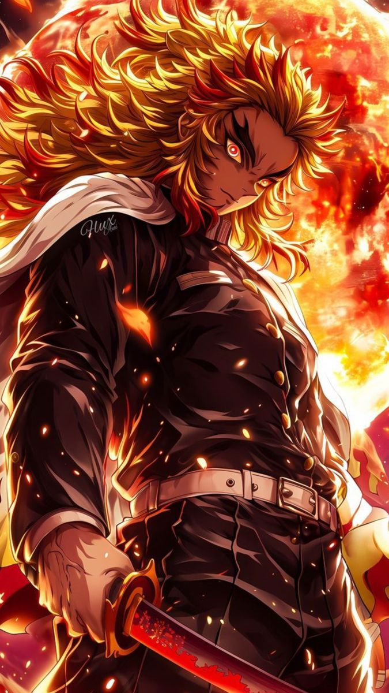

Zenitsu Agatsuma
Zenitsu Agatsuma, de Demon Slayer: Kimetsu no Yaiba, é o tipo de guerreiro que ninguém leva a sério à primeira vista. Medroso, inseguro e sempre à beira do desespero, ele parece completamente fora de lugar entre caçadores de demônios. Mas por trás disso existe algo raro: um instinto afiado e um talento absurdo. Quando perde a consciência, todo o medo desaparece, e dá lugar a um lutador extremamente rápido e preciso, capaz de derrotar inimigos em um único movimento usando a Respiração do Trovão. É o contraste que define Zenitsu: um garoto que foge da luta… até o momento em que se torna uma das armas mais rápidas e perigosas do campo de batalha.

Kyojuro Rengoku
Kyojuro Rengoku, de Demon Slayer: Kimetsu no Yaiba, é a personificação da determinação e da honra. Sempre com um sorriso confiante e uma presença marcante, ele inspira todos ao seu redor com sua energia e senso de dever. Como Hashira das Chamas, sua força é tão intensa quanto sua personalidade. Rengoku luta com a Respiração das Chamas, usando técnicas poderosas e diretas, movidas por um espírito inabalável e uma vontade feroz de proteger os outros, mesmo diante da morte. Ele não é apenas um guerreiro forte, mas um símbolo: alguém que aceita seu destino de cabeça erguida, transformando cada batalha em um ato de coragem, orgulho e sacrifício..

Nezuko Kamado
Nezuko Kamado, de Demon Slayer: Kimetsu no Yaiba, é a prova viva de que nem todo demônio perde sua humanidade. Transformada à força, ela carrega dentro de si uma luta constante entre o instinto e o afeto. Silenciosa, mas intensa, Nezuko protege aqueles que ama com uma ferocidade quase primitiva. Seu poder vem do próprio sangue demoníaco, permitindo regeneração rápida e técnicas como as chamas que queimam apenas o mal, uma força tão destrutiva quanto controlada. Ela não luta por vingança, mas por vínculo. Mesmo sem palavras, sua presença diz tudo: ainda há humanidade ali, resistindo, lutando… e vencendo todos os seus sentidos.